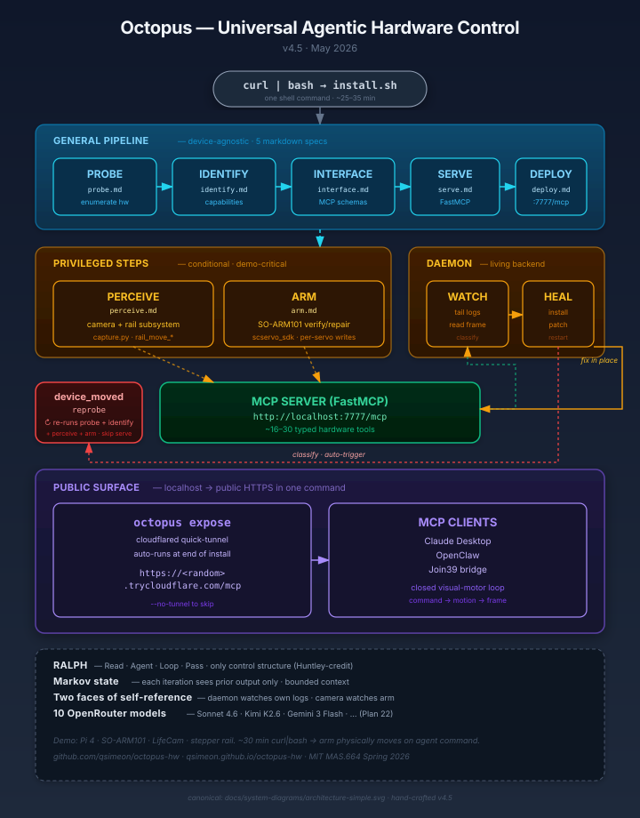

Three trends converging
Three things became true at roughly the same time. Their intersection is the gap Octopus fills.
Everything got a microcontroller
Appliances, lab gear, teaching arms, grow-tents, CNC mills — anything with a USB port or GPIO header is now computerized. The long tail of controllable devices is enormous and growing.
Coding agents got good at computer-use
Web search, datasheet lookup, tool calls, platform-specific code generation — agents can now read a device wiki and write a working driver in the time it takes to brew coffee.
Software wrapped itself for agents
Every SaaS company is shipping MCP servers so AI agents can drive their product. Stripe, Linear, Notion, GitHub — the software world is agent-ready. Hardware hasn't caught up.
Hardware hasn't caught the MCP explosion yet.
That's the gap.
Two ideas, both simple
The coding agent is the software. Like an OS is the runtime for applications, a coding agent is the runtime for specs — a new kind of operating system for an agentic, living backend. You don't write platform-specific code; you write a markdown specification and the agent figures out the implementation. Same spec → different code on Mac vs Pi vs Windows.
Prompts are the protocol. The five markdown files in protocol/ aren't configuration — they're the program. An Agent reads the Specs and acts on the Platform in front of it. What comes out — the running, agent-callable hardware — is what we call Infrastructure.
I = A(S, P)
Together: install.sh drops the coding agent and the protocol on any machine. The agent reads the specs, discovers your hardware, builds an MCP server. The infrastructure isn't shipped — it emerges from the agent acting on the specs and the platform in front of it. Any AI can now control your devices.
Drop one shell command on a Pi or Mac. ~25 minutes later, every connected peripheral — arm, camera, sensor, GPIO pin — is a typed, agent-callable MCP tool. The agent reads five markdown protocol specs, probes USB / serial / I²C / GPIO, identifies what's plugged in, looks up datasheets, writes a FastMCP server tailored to that exact machine, and exposes a Cloudflare HTTPS tunnel. Same five specs work on a Mac with a completely different discovered tool set.
System architecture
Five general specs drive the pipeline. Two privileged framework steps handle demo-critical hardware. A watch/heal daemon keeps the server alive. One command makes it public.

curl | bash → general pipeline → privileged steps → daemon → MCP server → reprobe path → public surface. Eight named blocks, no orchestration code beyond the RALPH loop.How a single install actually flows
A user exports an OPENROUTER_API_KEY and runs the one-liner. Here's what happens in the ~25 minutes that follow.
PROBE — "What's plugged in?"
The agent detects the OS, runs platform-appropriate discovery (lsusb on Linux, system_profiler on macOS), and writes a JSON manifest of every hardware device it finds. USB, serial, I²C, GPIO, Bluetooth, Wi-Fi — cast a wide net, trim later.
IDENTIFY — "What can it do?"
The agent reads the probe output and figures out each device's product, SDK, and capabilities. It uses vendor/product IDs, driver names, and — critically — web search. It'll find the SeeedStudio wiki, the Feetech datasheet, the scservo_sdk Python package. The chip ID names the adapter; the agent identifies the product.
INTERFACE — "Make MCP tools."
One tool per capability. arm_set_joint_angle(joint, angle, speed). lifecam_studio_capture_image(format). wifi_scan(). Target ~24 high-leverage tools, not a sprawling catalog. Each gets a typed JSON Schema with parameters, descriptions, and implementation hints.
SERVE — "Write the actual server."
The agent generates a complete FastMCP server.py — typically 470–610 lines — with one @mcp.tool() handler per schema. Real hardware I/O. Thread locks for shared buses. No stubs, no TODOs, no pass. The server is self-contained and ready to run.
DEPLOY — "Make it live."
Install dependencies. Start the server on port 7777. Write config snippets for Claude Desktop, OpenClaw, Cursor. Arm the watch/heal daemon. The MCP server is now accepting connections.
deploy.md → http://0.0.0.0:7777/mcpPERCEIVE + ARM — privileged steps
If a camera was discovered, the perceive step selects it as the "perception eye," generates a thin capture bridge, and initializes a Markov visual state (current frame, prior frame, rolling text summary). If a robotic arm was discovered, the arm step verifies the generated tools against the physical hardware — and rewrites them if they're wrong.
conditional · only runs if relevant hardware is presentEXPOSE — public in one command
octopus expose spins a Cloudflare quick-tunnel. Your phone agent in a cafe drives your Pi at home. One command from "running locally" to "any agent on the public internet can drive this hardware." Neither piece is novel in isolation; the design point is that the deployment surface scales to the public internet without the user editing any networking config.
Principles we coalesced on
Six design principles emerged from building this. Each one was earned by a bug, a misdesign, or a late-night argument.
Read · Agent · Loop · Pass
The only control structure in Octopus. Every pipeline stage, every daemon tick, every heal action is the same four-step loop. The orchestrator stays small — it doesn't know what stage it's executing, only how to render a spec, spawn the agent, and check whether a file appeared. The filesystem is the API.
Each iteration sees only the prior output
One step back, no further. interface.md reads identify/output.json, never probe/output.json. Retries see the prior agent.log, not the full history. The daemon's visual state is two frames + a rolling text summary. Bounded context, recoverable failures, predictable costs.
Self-reference at two layers
Software: the daemon tails its own server logs, reasons about its own health, patches itself on degradation. Hardware: the camera watches the arm to verify commands the agent just sent — a literal mirror, in physical form. The software face is what we have empirical confidence in; the hardware face is one demo, however compelling. We're honest about which is which.
The orchestrator stays minimal
Specs encode the shapes the agent must produce. Schema discipline is the contract. When we find ourselves adding a device-specific conditional to the orchestrator, we've made a mistake — that belongs in a spec. A new device class shipped as a spec edit is a small change. A new device class shipped as Python is a regression.
Name the messy compromise
"Hardware-agnostic" was always aspirational. What's actually true: device-agnostic for the general path, with curated hooks for hardware we care about. perceive.md (camera + rail) and arm.md run conditionally, only if that hardware is discovered. The hooks are explicit, scoped, and never imported by the general pipeline.
Tiny problem → tiny fix
The MCP server is localhost-only. Useless to an agent on a phone. octopus expose spins a Cloudflare quick-tunnel and prints a public HTTPS URL. One command from "running on a Pi in a dorm room" to "any agent on the public internet can drive this hardware." We think this is the demo moment that sticks.
The RALPH loop, concretely
Every step the orchestrator runs is the same shape:
This single loop is why the orchestrator stays small while the system grows. Adding the perception subsystem didn't add Python — it added perceive.md. Adding daemon-side device-renumbering recovery didn't add Python — it added a new heal classification to heal.md. Every new behaviour is a new spec, not a new control path.
What this is not
Not "an LLM controls a robot." It's a coding agent writing a typed tool layer once, at install time. After that, the MCP server is plain Python with real SDK calls. The LLM is gone from the hot path.
Not ROS. Much smaller surface area. No centralized state, no topic graph, no launch files. Five markdown specs and a small orchestrator. The generated server is a single self-contained Python file.
Not Hugging Face's LeRobot. Octopus is hardware-agnostic — it probes whatever's plugged in. LeRobot is one possible discovery target. In fact, the arm step reads LeRobot's calibration JSON for the degree-to-raw mapping; they're complementary.
Not pre-trained policies. We don't ship weights. We ship specs. The agent reads online documentation and writes code against the relevant SDKs. No training data, no fine-tuning, no reward functions.
Try it
Two commands. Then your machine has tools.
The pipeline runs with Gemini 3 Flash via OpenRouter by default. Any OpenRouter-compatible key works.
- An
OPENROUTER_API_KEY(grab one at openrouter.ai) - ~25 minutes (Mac is faster; Pi takes longer)
- Something plugged in — a camera, a serial device, GPIO sensors, anything
- Python 3.11+, Node 18+, Git on PATH
- macOS, Linux (Debian/Ubuntu/Pi OS), or WSL
The agentic OS thesis
There's a bigger idea underneath all of this.
An operating system is a runtime for applications. You don't write to disk sectors; you call write() and the OS figures out the device-specific path. The application describes what; the OS handles how.
A coding agent is a runtime for specs. Like an OS abstracts the disk, a coding agent abstracts the platform. The spec describes what; the agent figures out how. The spec never rots because agents improve.
This is the move Octopus makes explicit: prompts are the protocol, and infrastructure is what emerges when an agent reads that protocol on real hardware. The five protocol spec files drive a small orchestrator. The result is a complete, running MCP server tailored to whatever's plugged in. No driver registry. No device manifest. No per-device switch statements.
We think the installed-software era is ending for a large class of problems. What does "deploying software" mean in a world where agents read specs and write implementations on site? You ship the spec. The runtime is the agent. The platform is whatever's plugged in. The infrastructure that used to be hand-written, per-device, per-platform — that's the part the agent inhabits now.
Octopus is one instance of this pattern applied to hardware. The same pattern works for cloud infrastructure, for API integrations, for data pipelines — anywhere the implementation is platform-specific but the intent is portable. We built the hardware version because that's where the gap was widest and the demo is the most visceral: you can watch the arm move.
Honest open work
Hardware self-perception works for our arm rig with controlled lighting — the camera sees the arm, the vision model summarizes what changed, the daemon verifies its own actions. It is not generalized. A different rig, different lighting, a camera that isn't pointed at the actuator — all untested. We claim the pattern; we don't claim it transfers without work.
Stable public URLs (named Cloudflare tunnels that survive restarts) are post-launch work. Today, octopus expose gives you a quick-tunnel URL that rotates every time the tunnel restarts. Fine for demos; not fine for production.
The system generates control code; it does not synthesize safety code. Voltage limits, thermal cutoffs, duty-cycle enforcement — these must be present in the spec or absent from the system. arm.md includes scaffolding (joint-2 thermal management, torque-enable at init, bus arbitration locks). Specs for other hardware would need equivalent scaffolding.
We invite collaboration. The honest open question: what kinds of hardware does this not work on? Hardware with no public documentation. Hardware requiring kernel-mode drivers. Hardware behind license-walled SDKs. Hardware with strict real-time requirements. Python + MCP + LLM-in-the-loop is fine for a 6-DOF teaching arm; not fine for a quadruped balance controller. The boundary between "agent-ready" and "human-only" hardware is the interesting research frontier.